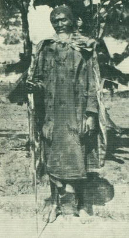

Baadhi ya viongozi wa jadi waliokuwa na mfumo wa Watemi ni Mtemi Mirambo wa Unyamwezi, Isike wa Unyanyembe, Mkwawa wa Uhehe na Mazengo wa Ugogo. Hawa ni baadhi tu ya viongozi wa jadi waliotumia mfumo wa utawala wa Watemi.
Mtemi Mirambo
Mtemi Mirambo alikuwa kiongozi wa jamii ya Wanyamwezi (1840 – 1880). Utawala wa Mtemi Mirambo ulikuwa wa kurithi kutoka kwa baba yake Mtemi Kasanda wa Uyowa. Uyowa ni eneo la utawala wa baba yake. Kielelezo namba 1 kinaonesha picha ya Mtemi Mirambo.
Tangu awali himaya hii ilikua kutokana na uwezo mkubwa wa kijeshi waliokuwa nao. Aidha, utawala huu ulikua zaidi kutokana na uvamizi wa maeneo yaliyowazunguka ili kupanua himaya.

Mfano, Mtemi Mirambo aliendeleza utawala wa himaya hii baada ya kifo cha baba yake kwa kuvamia maeneo yaliyowazunguka kama vile Ulyankulu na kuunganisha na Uyowa, hivyo kuanzisha utawala wa Urambo. Kama zilivyo tawala zingine za Kitemi, utawala huu uliimarika zaidi kutokana na biashara za masafa marefu na zile zilizofanyika katika Pwani ya Bahari ya Hindi. Jamii hii ya Wanyamwezi ilikuwa moja ya jamii maarufu sana katika biashara.